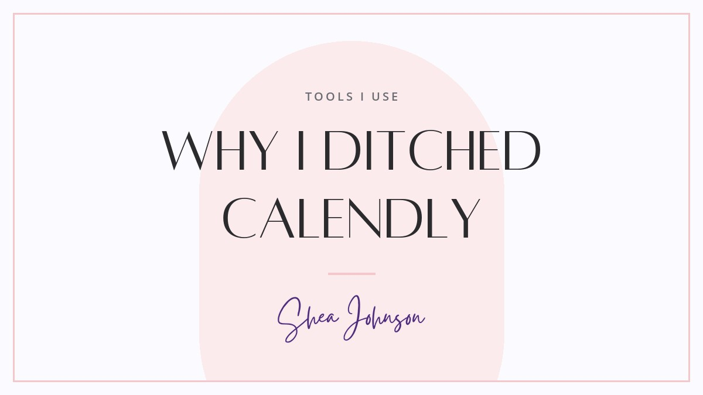

Disclosure: For links you click on and make a purchase, I may earn a commission at no extra cost to you. Thank you for supporting my content!
I used to use Calendly to book my appointments.
And of course, at first the limited features were cool.
But then I needed more, right?
I remember going online and researching to see if there were any alternatives.
I discovered TidyCal.
Which seemed like the best thing going with its features and pricing compared to Calendly.
But then I kept digging.
And lo and behold…
I hit the jackpot.
I found Cal.com.
Here’s what I love about it:
Outside of the fact that it offers unlimited appointment types with unlimited time durations…
My ultimate favorite feature is the direct calendar integration with Apple Calendar.
Plus, I get everything I need right now in this calendar platform for FREE.
I love not having to go through Google Calendar just to get my appointments onto my Apple Calendar anymore.
I’m a big Apple ecosystem person.
So you have no idea how much of a relief that was for me.
So…
If you need a calendar booking software to integrate into your workflow, and you want to cut down business expenses (or save right from the start), I highly recommend Cal.com.
Here’s what else you get:
They let you collect payments at booking.
Add conflicting calendars.
They have hundreds of integrations, including HubSpot (which has been collecting my entries every time someone books).
They let you create forms to collect information during a booking.
You can create instant meetings.
And even better…
Those who book with you do not need to have or create an account to meet with you.
They just click a link when it’s time to meet.
And the Cal.com meeting opens up in a browser window — no account creation necessary.
So there you have it…
I love it, and I hope you love it too!
If you choose to sign up, please use my referral link below so I can continue to put out content like this for aspiring entrepreneurs.
Best,
Shea